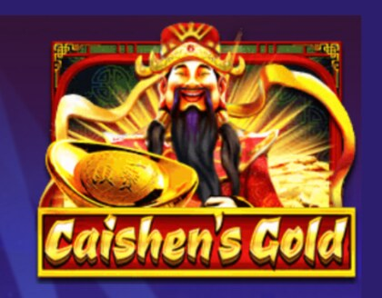
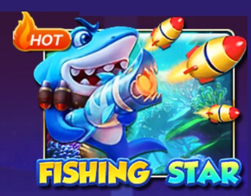
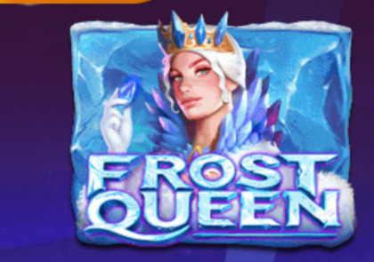
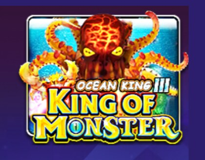

What Is 918Kaya?
918Kaya is a mobile casino game app. Inside it you'll find slots, fishing games and table games, all played with credit tied to your game ID. It's popular with players in Papua New Guinea because it works well on a phone and doesn't need a big data allowance.
One thing worth knowing early: the app doesn't have a public sign-up form. Your game ID comes from an agent, which is why most people start by asking one for it. See how game IDs work below.
What You Can Play
Slots
Reel games in many themes, from simple three-reel slots to feature-heavy video slots.
Fishing games
Shooting-style games where you aim at fish for multiplied prizes. Popular in the Pacific.
Table games
Card and table games including baccarat and similar classics.
Mobile first
Built for phones, with quick loading and simple menus.




How to Download 918Kaya
Tap the download button
Use the button below. It opens a third-party install guide for Android or iPhone. See the full download guide.
Install the app
Follow the on-screen steps. You don't need a Google Play or App Store listing to install it.
Log in with a game ID
Open the app and enter the game ID an agent gave you. The app won't work without one.
How a 918Kaya Game ID Works
A game ID is a username and login for the app, and it's issued by an agent rather than created by you. The usual steps are:
- Contact an agent, usually on WhatsApp.
- Deposit, or claim a free credit offer if the agent has one.
- The agent sends you a game ID and password.
- Log in on the 918Kaya app and play.
Keep your game ID and password private, and only deal with an agent you can verify. Impersonators exist.
Payments in PGK
Most platforms serving Papua New Guinea take deposits and pay withdrawals by bank transfer in kina, typically from BSP or Kina Bank. Many players use SMS banking and send a receipt as proof of payment.
Deposits
A bank transfer with a reference, then a screenshot or SMS slip sent back as proof.
Withdrawals
Paid to your bank account. Check the minimum amount and any rollover first.
Rollover
Deposits usually carry a wagering requirement. Know the number before you deposit.
Looking for a Platform With Direct Sign-Up?
918Kaya itself needs an agent for a game ID. If you'd rather register directly with a platform, we recommend Kundu365. It's a different platform from 918Kaya, with its own account, games and rules. Our tested details are:
- Bank transfer deposits in kina, with a receipt screenshot
- 1x rollover on a normal deposit
- K50 minimum withdrawal
- Withdrawal timed at under 24 hours in our own test
Staying Safe
- Never share your password or bank PIN.
- Check who you're sending money to before every transfer.
- Keep receipts until your balance updates.
- Never pay a "fee" to release winnings.
- Set a budget first. See our responsible gaming page.
Frequently Asked Questions
What is 918Kaya?
918Kaya is a mobile casino game app with slots, fishing games and table games. You log in with a game ID and play inside the app.
How do I download 918Kaya in Papua New Guinea?
Use the download button on this page to open the install guide for Android or iPhone. You don't need a Google Play or App Store listing to install it.
How do I get a 918Kaya game ID?
Game IDs are issued by agents, not by the app. You ask an agent, make a deposit or claim free credit, and they send you a game ID to log in with.
Is this the official 918Kaya website?
No. This is an independent guide. We are not the 918Kaya developer. Our Register and Login buttons open Kundu365, an alternative platform we recommend, and we may earn a commission.
Can I pay in PGK?
Platforms serving PNG commonly accept bank transfers from BSP and Kina Bank in kina. Check the exact minimums and rollover on the platform before you deposit.
Do I need to be 18?
Yes. You must be 18 or older. Only play with money you can afford to lose.